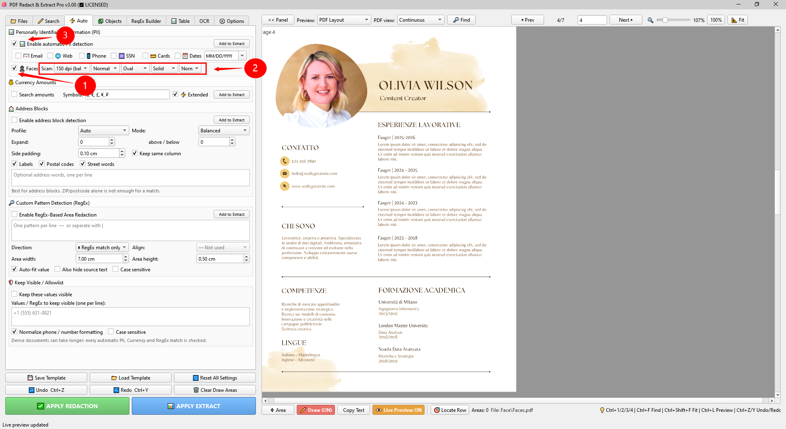
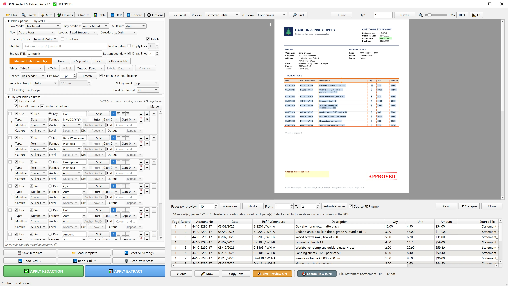
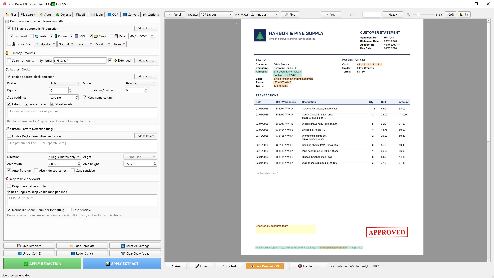
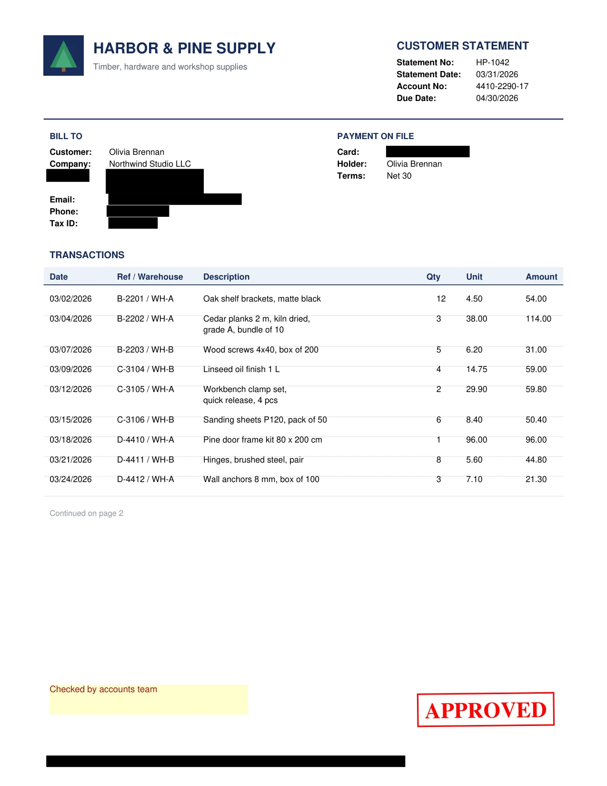
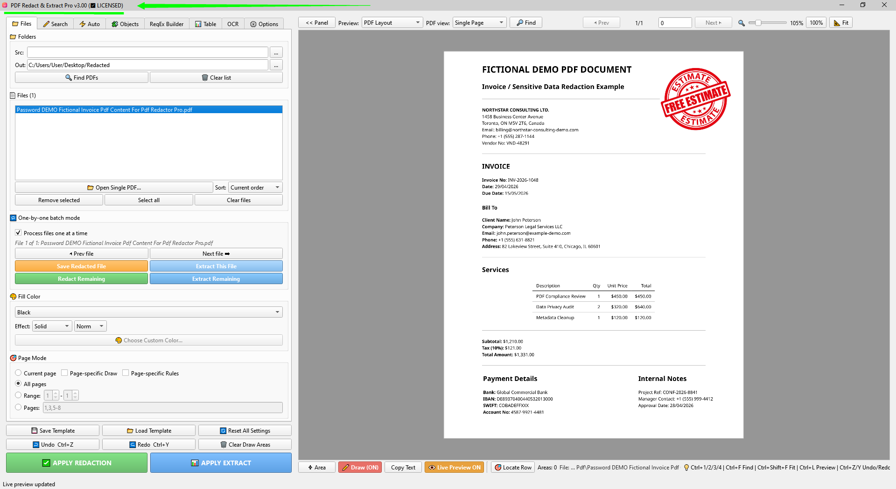

This guide covers both redaction and extraction. PDF Redact & Extract Pro works locally on your PC; an internet connection is needed only for the license check. Use Live Preview and Excel Preview to verify rules before creating the final output.
Need to hide sensitive data?Use Draw, Search, Auto Detection, RegEx or Objects, check Live Preview, then Apply Redaction.
Need structured Excel data?Describe the table once in the Table tab, shape the columns, check Excel Preview, then Apply Extract.
Working with scans?Create searchable OCR copies first, then use the normal Search, Auto and Table workflows.
Need an editable copy?Use the Convert tab: the whole PDF to Word or Excel, scans included, without rules.
New in this updateConvert PDFs to Word and Excel, and better OCR
Click the picture or press Z to zoom to each mark; ← → change steps.
1 Numbered red marks show the controls of each step. Click the picture to zoom in on them.
Verification matters. Redaction and extraction rules can behave differently across layouts. Review the PDF preview and the generated output before sharing or archiving results.
01
Quick Start
A reliable first workflow for a new document.
Walkthrough · Quick Start · from PDF to resultStep 1 of 5
Click the picture or press Z to zoom to each mark; ← → change steps.
Fixed visual area
Use Draw. Choose Page-specific Draw if the rectangles differ by page.
Stable labels / values
Use Search and directional capture. Auto-fit trims the result to the found text.
Structured repeated rows
Use Table: draw the table once, set the column cards, then shape the output with Split and Merge.
02
Files, Batch Queue and Page Mode
Choose what to process and where results are saved.
Walkthrough · Files, batch queue and page modeStep 1 of 6
Click the picture or press Z to zoom to each mark; ← → change steps.
Batch queue
All files in the list are processed with the same rules. Templates make the same setup reusable for the next batch.
One-by-one mode
Use it when each PDF needs inspection or slightly different rules. The current file can be redacted or extracted before moving to the next one.
03
PDF Preview, Navigation and Manual Tools
The preview is the central verification surface.
Walkthrough · PDF Preview controlsStep 1 of 6
Click the picture or press Z to zoom to each mark; ← → change steps.
Zoom does not move your areas. Zoom and Fit change only the view. Draw areas are stored in page coordinates, so they stay in place in both Continuous and Single Page view.
04
Search Tab
Find known text, labels and nearby values.
Walkthrough · Search tabStep 1 of 6
Click the picture or press Z to zoom to each mark; ← → change steps.
Line flow, Lines, Join and Fit
Each tag row in a Search table has its own capture profile: Line flow (down or up), number of Lines, how lines are Joined and the Fit mode. Smart prefers a compact nearby value; Width searches across the configured width and then trims to the found text. Use Width when the value can extend far across the row.
Template behaviour. Auto-fit, Distance, case sensitivity and source hiding are stored with the template, so the same capture behaviour comes back after a restart.
From Search to Extract: expand or collapse Search panels, add a Search result to Extract, open the Table workspace and review the new Extract cards and the data in Excel Preview.
05
RegEx Builder / Text Mask Generator
Build and test detection and selective-redaction patterns visually.
Walkthrough · RegEx BuilderStep 1 of 6
Click the picture or press Z to zoom to each mark; ← → change steps.
Best practice: generate the rule, check the green test panel, then test it in Live Preview on a representative PDF before batch processing.
06
Auto Detection
Combine common detectors with manual and Search rules.
Walkthrough · Auto DetectionStep 1 of 6
Click the picture or press Z to zoom to each mark; ← → change steps.

Faces: solid, blur or pixelation masking where supported.
Automatic detection is a helper, not a substitute for review. Photos, unusual fonts, dense layouts and OCR errors can produce misses or false positives.
07
Objects and Visible Object Inspector
Images, annotations and other objects that are not normal text.
Walkthrough · Objects tabStep 1 of 5
Click the picture or press Z to zoom to each mark; ← → change steps.
08
Page-specific Draw and Page-specific Rules Advanced
Different manual areas or different rule profiles on individual pages.
Which mode should I use?
Different manual rectangles only→ Page-specific Draw
Different Search / Auto / detection / extraction rules→ Page-specific Rules
Need both→ Enable both modes
Walkthrough · Page-specific DrawStep 1 of 4
Click the picture or press Z to zoom to each mark; ← → change steps.
Only Draw rectangles become page-specific with Page-specific Draw. Search, Auto, PII and RegEx rules still apply to all pages unless Page-specific Rules is on as well.
09
Table Workspace
Extract physical table columns and combine them with values from elsewhere on the page.
Walkthrough · Table workspaceStep 1 of 6
Click the picture or press Z to zoom to each mark; ← → change steps.
Manual Table Geometry
Manual Table Geometry is one editing mode for the complete physical table shape: the outer table area, the vertical column separators and the header divider shown in PDF Preview. Automatic detection provides the first geometry; turn the mode on when you need to correct it directly.
Control
What it does
Draw
Drag a rectangle around the table body in PDF Preview. This rectangle belongs to Table extraction / redaction; it is not a normal redaction rectangle.
+ Separator
Click inside the orange table area to add a vertical column separator. Existing separators and outer boundaries can be dragged.
Reset
Resets the outer area, the Header band and all manual separators. Column-card settings are kept; confirmation and Undo are available.
Rescan
Reads column captions and geometry again from the current area. Card settings are kept when the column names still match.
Editing sequence. For a difficult table: Manual Table Geometry → Draw the table area → add or drag separators → set Header / First row → Rescan if the captions should be read again → Refresh Preview.
Has header
The First row height (in points) is the column-heading band. It gives the column names and is not exported as a record. You can also drag the lower edge of the header band in PDF Preview.
No header
The first row stays data. Columns get generic names such as Column 1, Column 2 until you rename them. Continue without headers accepts following pages without a repeated heading only after the Key column, column positions, data types and several rows match.
Page scope. The table geometry applies to the whole document; Page Mode on the Files tab still decides which pages are processed. If the whole table moves between pages or files, use Auto Shift. After changing geometry, Header or Layout, use Refresh Preview and check representative pages before Apply Extract.
Row Mode at a glance
Row Mode
A new record starts…
Semi Automatic
where the program sees a new row from text and layout. A good first try.
Grid Table / Merged-cell Grid
at the ruled lines of a full grid; Merged-cell Grid keeps merged cells together.
Horizontal Lines
at horizontal rules between records (used in this guide).
Key-based
at each value in the Key column; continuation lines join the record above.
Rows from Text, Empty Line Gaps, Background Bands, Rows of Same Height
at each text line, at blank gaps, at shaded bands, or every fixed height.
Key-Value Cards
for label: value blocks instead of a grid.
Add values from outside the table
Search and Auto results can be added with Add to Extract. They appear as cards below the Physical Table Columns and as extra columns in every row, for example the account number of the statement.

“Account No” from a Text-Based Area rule is repeated in every extracted row.
10
Physical Table Columns
Configure each column independently.
Walkthrough · A column cardStep 1 of 5
Click the picture or press Z to zoom to each mark; ← → change steps.
Setting
Purpose
Type
Text, Date, Number, Currency or Image. Values of the wrong type are kept as text for review; Strict removes records whose cell is not a pure number.
Format
Date order (Auto (EU), Auto (US) or an explicit format such as MM/DD/YYYY) and number / currency formats. One column never mixes US and EU date orders.
Multiline
How continuation lines are joined: space, new line, comma or semicolon.
Gap ↑ / Gap ↓
How nearby lines are assigned to the current record.
Anchor
How the column is tied to its record; Anchor RegEx for special cases.
End
Text that ends the column value.
Alignment
Auto, left, centre or right in Excel Preview and in the Excel file.
11
Split and Merge Output Fields
Transform captured values without changing the source PDF.
Walkthrough · Split and MergeStep 1 of 5
Click the picture or press Z to zoom to each mark; ← → change steps.
Short Split demo: configure the split, create child fields and see the new Excel Preview columns.
Two different Merge buttons.Merge here joins output fields into one Excel column. Merge Cells in Catalog Cards joins cells of a card in the PDF; see Catalog Cards.
12
Excel Preview and Locate Row
Review the exact structured output before creating the workbook.
Walkthrough · Excel Preview and Locate RowStep 1 of 4
Click the picture or press Z to zoom to each mark; ← → change steps.
Use Preview as a validation step. If a split, merge, data type or record boundary is wrong, fix the card before Apply Extract instead of repairing the workbook afterwards.
13
Auto Shift Improved in 3.1
One template finds the same table wherever it sits on the page.
Purchase orders, invoices and reports often print the same table at a different height or margin. With Layout: Auto Shift the saved table is found again by its header and structure, and the whole geometry moves with it.
Walkthrough · Auto Shift · one template, the table in a different placeStep 1 of 3
Click the picture or press Z to zoom to each mark; ← → change steps.
Fixed Structure
Keeps the saved position and column widths. A ruled grid can still be matched at a different position when it is proven to be the same grid.
Auto Shift
Actively relocates the table when a matching header or strong structural evidence is found. Individual column widths are preserved.
Check one file of each layout. Before a large batch, open one file of every layout variant and look at Excel Preview.
14
Down Columns Sequence and Hierarchy Tables New in 3.1
Lists printed side by side become one continuous table, with their headings.
Price lists and directories often run down several columns of a page. Define each column as its own Physical table, then put them into one Sequence. Hierarchy Tables add the section heading of each list to every record.
Walkthrough · Down Columns SequenceStep 1 of 5
Click the picture or press Z to zoom to each mark; ← → change steps.
When to use Sequence
Flow is Down - Keep Columns and one list continues from one column (table) to the next. The order in the dialog is the order of records in Excel.
Hierarchy Tables (HT)
+ Hierarchy Table creates a heading table. Its card (here Room, Level: Document, Dir: Above, Output: Repeat) fills the heading into each record below it.
15
Combine Tables New in 3.1
Different tables, one clean sheet.
Walkthrough · Combine TablesStep 1 of 5
Click the picture or press Z to zoom to each mark; ← → change steps.
Option
What it does
Match
By Header Name, By Position or Manual Mapping.
Records
Append Rows (one after another), Merge by Key (rows with the same key become one), Merge by Card (Catalog Cards).
Conflict
When merged rows disagree: keep both, prefer the first or last source, or leave the cell blank.
Rebuild Mapping
Updates the mapping after columns of a source table were changed.
16
Catalog Cards New in 3.1
Repeating product cards, text and pictures, one Excel row per card.
A catalog page is not one big table but a set of similar cards. Describe one card, find all the others, and export each card as a row, with its picture placed inside the Excel cell.
Walkthrough · Catalog Cards and Merge CellsStep 1 of 6
Click the picture or press Z to zoom to each mark; ← → change steps.
Cancel any time. While Merge or Unmerge is on, Esc cancels it wherever the keyboard focus is. A right-click in PDF Preview or a second click on the button also cancels.
Why doesn’t Excel Preview change while I scroll? While Merge is on, scrolling does not switch the active table: the merge belongs to the table you started with, and the status bar says so. When Merge ends, the page on screen is checked again and the table and Excel Preview follow it.
The drag selected too little or nothing happened
Cover at least half of each cell you want to merge and keep the rectangle inside one card. The status bar explains what was missing.
Does a merge change my other tables?
No. A merge belongs to the selected table (Tn) and is applied to all of its matched cards only.
17
OCR for Scanned PDFs Improved
Searchable copies of scans, Picture Areas, and a rebuilt "Text and pictures" copy.
A scan is only a picture of a page: Search, Auto and Table find nothing in it. OCR recognises the text and writes a copy of the PDF that has a text layer. The original file is never changed. Everything runs on your PC with the bundled Tesseract engine.
Walkthrough · OCR for scanned PDFsStep 1 of 7
Click the picture or press Z to zoom to each mark; ← → change steps.
Searchable image
The page stays the scan, pixel for pixel; recognised text lies invisibly over it, as in Adobe or FineReader searchable PDFs. Best when the copy must look exactly like the original, for example before redaction.
Text and pictures
The page is built again from the recognised text: real, selectable text with sizes, bold, colours and underline, table lines and cell fill. Photos, logos, signatures and Picture Areas stay pictures. Pages that already had text are copied as they are.
Turned pages. Pages scanned sideways or upside down (90°, 180°, 270°) are detected and read upright. Slightly tilted pages are straightened.
Picture Areas are per page. An area drawn on page 1 affects page 1 only. Areas are saved with Save Template, cleared by Reset All Settings, and used both by OCR copies and by the Convert tab.
Which language and quality should I choose?
Choose every language printed in the document (several can be ticked). Balanced (300 dpi) suits most scans; Accurate (400 dpi) helps small print and poor scans but takes longer.
The scan filters changed how my copy looks
Binarize turns the page black and white, and contrast changes the colours. Turn the filters off for normal scans; they are meant for faded or low-contrast pages.
18
Convert PDF to Word and Excel New
Editable Word documents and Excel workbooks, from text PDFs and scans.
The Convert tab turns a whole PDF into an editable document: a Word file that looks like the PDF, or an Excel workbook with its tables. Unlike Apply Extract it needs no rules: choose the format and press Convert. Scanned pages are recognised on the way.
Walkthrough · Convert to Word and ExcelStep 1 of 6
Click the picture or press Z to zoom to each mark; ← → change steps.
Word, as in the PDF
Real Word tables with merged cells, borders and fill; fonts, sizes, bold, colours; headings, bullet lists, links, headers and footers. Pictures sit where they were, photos in CMYK are kept, rotated text and drawings come across as pictures, and text that would not fit a narrow cell is narrowed slightly.
Excel, ready to calculate
Numbers as numbers, dates as dates (only when day and month cannot be mixed up), links as links. A table that goes on to the next page is joined into one, and fill-in lines stay visible.
Scans included
Scanned pages become text with tables, bold, underline, font sizes and colours, also white text on dark fills. Picture Areas from the OCR tab stay pictures; turned and tilted pages are put upright.
Separate from templates. Convert settings are remembered by the program automatically and are not part of templates. On this tab APPLY REDACTION and APPLY EXTRACT are switched off; Convert has its own button.
Which Word layout? Choose Editable when you will rewrite the text, and As in PDF when the look matters most, for example a form you will fill in.
Convert or Apply Extract?
Convert copies the whole document as it is. Apply Extract builds a clean table from the values you define with Search and Table rules, for many files with the same layout. Use Convert for one-off documents and Extract for repeated data.
The Word file uses a different font
The PDF may use a font that is not installed on your PC; Word then shows a similar one. Install the font, or keep the result: line widths are measured with the font Word will really use, so lines and cells still fit.
19
Templates and Presets
Reuse complete processing setups for recurring document types.
Save Template stores Search, Auto, OCR, Table, column cards, Split / Merge, Sequence, Combine, Catalog Cards, page scope and other settings in one JSON file. Load Template restores them.
Page-specific Draw areas and Page-specific Rules profiles are stored when those modes are used. Passwords are never stored.
Reset All Settings returns to a clean start; Undo / Redo step through Draw, Objects and Table changes.
Preset Templates in Options are editable starting points; save your own version with Save Template.
Template and history buttons sit below every tab.
After major layout changes in a source document, re-check the template on one file before processing a batch.
20
Apply Redaction, Apply Extract and Output
Create the final PDF or Excel result after checking the preview.

Before: Auto Detection marks the card, address, email, phone and Tax ID.

After: Redaction/Statement_HP-1042_redacted.pdf. The hidden text is removed, not just covered.
Walkthrough · Apply ExtractStep 1 of 3
Click the picture or press Z to zoom to each mark; ← → change steps.
X Statement_HP-1042_extracted.xlsx
A
B
C
D
E
F
G
H
I
1
Page
Record
Date
Ref / Warehouse
Description
Qty
Unit
Amount
Source File
2
1
1
03/02/2026
B-2201 / WH-A
Oak shelf brackets, matte black
12
4.50
$54.00
Statement_HP-1042.pdf
3
1
2
03/04/2026
B-2202 / WH-A
Cedar planks 2 m, kiln dried, grade A, bundle of 10
3
38.00
$114.00
Statement_HP-1042.pdf
4
1
3
03/07/2026
B-2203 / WH-B
Wood screws 4x40, box of 200
5
6.20
$31.00
Statement_HP-1042.pdf
5
1
4
03/09/2026
C-3104 / WH-B
Linseed oil finish 1 L
4
14.75
$59.00
Statement_HP-1042.pdf
6
1
5
03/12/2026
C-3105 / WH-A
Workbench clamp set, quick release, 4 pcs
2
29.90
$59.80
Statement_HP-1042.pdf
7
1
6
03/15/2026
C-3106 / WH-B
Sanding sheets P120, pack of 50
6
8.40
$50.40
Statement_HP-1042.pdf
…
14 rows in total (both pages)
The Excel file written by Apply Extract (first rows). Dates and amounts arrive as real Excel dates and numbers.
Redaction is final in the generated copy. Open the output PDF and confirm that sensitive content cannot be selected or copied before sharing it. Originals stay unchanged.
21
Options, Performance and Preview Colours
Processing behaviour, memory use and overlay colours.
Walkthrough · OptionsStep 1 of 5
Click the picture or press Z to zoom to each mark; ← → change steps.
22
Keyboard Shortcuts
Frequently used viewer and editing commands.
Area / Select modeCtrl+1
Draw modeCtrl+2
Copy Text modeCtrl+3
Locate RowCtrl+4
Find in PDFCtrl+F
Fit PDF to windowCtrl+Shift+F
Toggle Live PreviewCtrl+L
UndoCtrl+Z
RedoCtrl+Y / Ctrl+Shift+Z
Show / hide left panelF9
Cancel Merge Cells / UnmergeEsc
Delete a selected Picture AreaDelete
Undo / Redo scope.Ctrl+Z / Ctrl+Y apply to Manual Draw areas, OCR Picture Areas (drawing, deleting, Clear page, Clear all), Safe Delete actions in Objects and Table / Extract changes, including Catalog Card merges. They do not undo ordinary Search / Auto control changes, and cannot reverse files already written by Apply Redaction or Apply Extract.
23
Password-protected PDFs and Licensing
Open protected documents without storing passwords.
Walkthrough · Password-protected PDFsStep 1 of 2
Click the picture or press Z to zoom to each mark; ← → change steps.

A valid license is shown in the title bar as LICENSED. The license check is the only step that needs the internet.
Using the license on two computers
One license can be active on up to 2 computers at the same time. Activating again on a computer that is already registered (for example, after reinstalling the program) does not use another activation.
To move the license to a new computer, open Options → License on the old computer and click Deactivate this computer. The program frees the activation (an internet connection is needed) and closes. Then enter your license key on the new computer. If the old computer is no longer available, contact support and we will free the activation for you.
24
Troubleshooting
Common checks before assuming a rule is broken.
Search or Auto Detection finds nothing
The PDF may be image-only. Use Copy Text or Find to confirm there is a text layer. If not, create an OCR searchable copy and run the rule again.
The Word file looks different from the PDF
Try the other Layout: As in PDF keeps every line in place, Editable lets text flow. A font that is not installed is replaced by a similar one; text in narrow cells is then narrowed a little so it stays on one line.
A scan was converted with wrong words
Check the language on the OCR tab, choose Quality 400 dpi, and turn on Straighten tilted pages. Draw a Picture Area around logos, stamps and handwriting so they stay pictures instead of becoming garbled text.
A table split over two pages became two tables in Excel
Turn on Join a table that goes on to the next page. Tables are joined when the columns match; a repeated header row is dropped.
Dates stayed as text in Excel
Convert writes a date only when the column makes the order of day and month clear (for example a day above 12 appears). Otherwise the value is left as text so it cannot be read the wrong way round.
Auto-fit captures too little text
Check the Area width and the Fit mode. Smart prefers a compact nearby value; Width searches across the configured width before trimming. For Simple Contextual Search, also check Distance.
Excel Preview does not match the intended output
Check the Key, Row Mode, data Type, Split / Merge, output order and alignment. Use Locate Row to trace a wrong cell back to the PDF.
Dates come out with day and month swapped
Set the Date column Format to Auto (US) or Auto (EU), or to an explicit format such as MM/DD/YYYY. One column never mixes the two orders; values in the other order stay as text for review.
A multi-line value is attached to the wrong record
Review Multiline, Gap ↑ / Gap ↓, Anchor and row boundaries. If the table itself is offset, adjust Manual Table Geometry or use Auto Shift before changing output transforms.
The table is not found on some files of a batch
Switch Layout to Auto Shift and check one file of each layout. If the header text differs between files, adjust the column names or use Start / End tags.
A Sequence is missing a column of the list
Open Sequence… and check that every table of the list is ticked and in the right order. Flow must be Down - Keep Columns.
Catalog cards are not all found
Draw the example card around its outer border, including the picture, then press Refresh Matches. Cards with a substantially different layout need their own table (T2, T3…).
Page-specific settings appear on the wrong page
Check whether Page-specific Draw or Page-specific Rules is on. In Continuous view, scroll to the intended page before editing.
OCR result looks visually different
Optional scan filters change the OCR copy. Turn off Deskew / Contrast / Binarize unless the scan needs them; the original document is unchanged.
Face, address or PII detection has false positives
Adjust detector settings, use the allowlist, or replace automatic detection with a more specific Search / RegEx rule for that document type.
The output must be verified
Always open the generated PDF or Excel file and check it. For redaction, verify that hidden content cannot be selected, copied or recovered.
Privacy choices. Essential storage remembers your choice. With your consent, Google Analytics helps us understand visits and improve PDF Redact & Extract Pro. Privacy Policy
Cookie Settings
Essential storage is used only to remember your choice. Google Analytics runs only if you accept analytics.